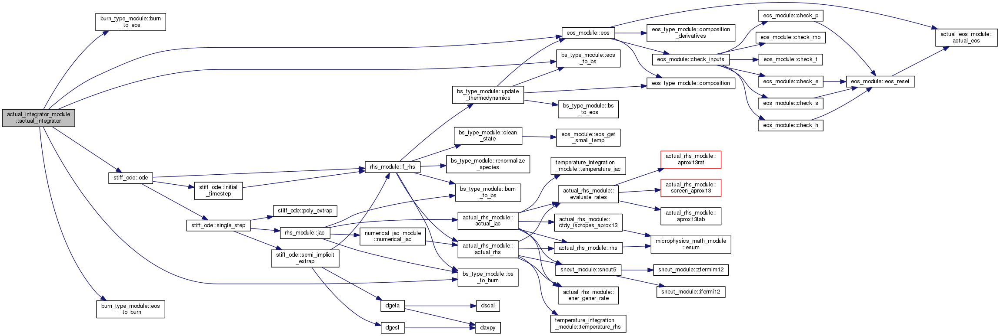

Reaction Networks¶
Network Requirements and Structure¶
A network both defines the composition advected by the hydro code as well as describes the burning processes between those isotopes. Evolving the species in a network requires an integrator. The design of Microphysics decouples the integrator from the network, allowing for the ability to swap integrators as desired. We discuss the integrators in a later section.
At a minimum, a network needs to provide:
nspec: the number of species in the networknspec_evolve: the number of species that are actually integrated in the network.Usually this is
nspec, but in general anynspec_evolve\(\le\)nspecis allowed. Those species not evolved are held constant in the integration.Note that the convention is that the first
nspec_evolveout of thenspecspecies are the ones evolved.nrates: the number of reaction rates. This is used to allocate space in therate_ttypenum_rate_groups: the number of components for each reaction rate we want to store in therate_ttypenaux: the number of auxiliary quantities needed by the network (these are not evolved).aion(:): the atomic weight (in atomic mass units) of the specieszion(:): the atomic number of the speciesspec_names(:): a descriptive name of the species (e.g. “hydrogen-1”)short_spec_names(:): a shorten version of the species name (e.g. “H1”)short_aux_names(:): the names of the auxiliary quantitiesnetwork_name: a descriptive name for the network
Most of these quantities are Fortran parameters.
A convention adopted in Microphysics is that each network is responsible for determining the energy release from a change in composition. Most networks will provide an array of the species binding energies and a routine to compute the energy yield from the reaction rates.
There are three primary files within each network directory.
actual_network.f90:This is the Fortran module actual_network with routines:
actual_network_init()actual_network_finalize()
This supplies the number and names of species and auxiliary variables, as well as other initializing data, such as their mass numbers, proton numbers, and binding energies. It needs to define the
nspecandnauxquantities as integer parameters. Additionally it must definenspec_evolve, the number of species that are actually evolved during a burn; in most cases, this should have the same value asnspec. Finally, it must also define nrates, the number of reaction rates linking the isotopes in the network.actual_rhs.f90:This is the Fortran module
actual_rhs_module, with routines:actual_rhs_init()actual_rhs(state)actual_jac(state)
This supplies an interface for computing the right-hand-side of the network, the time-derivative of each species (and the temperature and nuclear energy release), as well as the analytic Jacobian. Both
actual_rhsandactual_jactake a single argument, a burn_t state. They set the time-derivatives and Jacobian elements in this derived type directly.Note: some networks do not provide an analytic Jacobian and instead rely on the numerical difference-approximation to the Jacobian. In this case, the interface
actual_jacis still needed to compile.actual_burner:This is the Fortran module
actual_burner_module, with routines:actual_burner_init()actual_burner(state_in, state_out, dt, time)
This contains the interface for doing an actual burn. Here,
state_inandstate_outareburn_tobjects. In general, you will want to call integrator to use one of the pre-defined ODE integrators, but you could also write a custom integration here. This is covered in more detail in § 5.
Notice that all three of these modules have initialization routines:
actual_network_init()actual_rhs_init()actual_burner_init()
These must be called upon initialization. These should be not called within OpenMP parallel regions, because in general they will modify shared module data.
Note, depending on the network, some of these may do nothing, but these interfaces are all required for maximum flexibility.
Available Networks¶
aprox13, aprox19, and aprox21¶
These are alpha-chains (with some other nuclei) from Frank Timmes.
These networks share common rates (from Microphysics/rates),
plasma neutrino loses (from Microphysics/neutrinos), and
electron screening (from Microphysics/screening).
Energy generation.¶
These networks store the total binding energy of the nucleus in MeV as
bion(:). They then compute the mass of each nucleus in grams as:
where \(m_n\), \(m_p\), and \(m_e\) are the neutron, proton, and electron
masses, \(A_k\) and \(Z_k\) are the atomic weight and number, and \(B_k\)
is the binding energy of the nucleus (converted to grams). \(M_k\)
is stored as mion(:) in the network.
The energy release per gram is converted from the rates as:
where \(N_A\) is Avogadro’s number (to convert this to “per gram”) and \(\edotnu\) is the neutrino loss term.
breakout¶
CONe2NSE¶
general_null¶
general_null is a bare interface for a nuclear reaction network;
no reactions are enabled, and no auxiliary variables are accepted. The
data in the Fortran module is defined at compile type by specifying an
inputs file. For example,
Networks/general_null/triple_alpha_plus_o.net would describe the
triple-\(\alpha\) reaction converting helium into carbon, as
well as oxygen and iron.
At compile time, the network module actual_network.f90
is written using the python script write_network.py
and the template network.template. The make rule
for this is contained in Make.package (for C++ AMReX) and
GPackage.mak (for F90 AMReX). The name of the inputs file
is specified by the variable GENERAL_NET_INPUTS.
A version of this network comes with MAESTRO and CASTRO, so you do not usually need to worry about the version in Microphysics.
ignition_chamulak¶
This network was introduced in our paper on convection in white dwarfs as a model of Type Ia supernovae [ZingaleNonakaAlmgren+11]. It models carbon burning in a regime appropriate for a simmering white dwarf, and captures the effects of a much larger network by setting the ash state and energetics to the values suggested in [ChamulakBrownTimmesDupczak08].
This network has nspec = 3, but nspec_evolve = 1. Only a
single reaction is modeled, converting \(^{12}\mathrm{C}\) into
“ash”.
Energy generation.¶
The binding energy, \(q\), in this network is interpolated based on the density. It is stored as the binding energy (ergs/g) per nucleon, with a sign convention that binding energies are negative. The energy generation rate is then:
(this is positive since both \(q\) and \(dY/dt\) are negative)
ignition_reaclib¶
ignition_simple¶
This is the original network used in our white dwarf convection studies [ZingaleAlmgrenBell+09]. It includes a single-step \(^{12}\mathrm{C}(^{12}\mathrm{C},\gamma)^{24}\mathrm{Mg}\) reaction. The carbon mass fraction equation appears as
where \(N_A \left <\sigma v\right>\) is evaluated using the reaction rate from (Caughlan and Fowler 1988). The Coulomb screening factor, \(f_\mathrm{Coul}\), is evaluated using the general routine from the Kepler stellar evolution code (Weaver 1978), which implements the work of (Graboske 1973) for weak screening and the work of (Alastuey 1978 and Itoh 1979) for strong screening.
iso7¶
kpp¶
powerlaw¶
This is a simple single-step reaction rate. We will consider only two species, fuel, \(f\), and ash, \(a\), through the reaction: \(f + f \rightarrow a + \gamma\). Baryon conservation requres that \(A_f = A_a/2\), and charge conservation requires that \(Z_f = Z_a/2\). We take our reaction rate to be a powerlaw in temperature. The standard way to write this is in terms of the number densities, in which case we have
with
Here, \(r_0\) sets the overall rate, with units of \([\mathrm{cm^3~s^{-1}}]\), \(T_0\) is a reference temperature scale, and \(\nu\) is the temperature exponent, which will play a role in setting the reaction zone thickness. In terms of mass fractions, \(n_f = \rho X_a / (A_a m_u)\), our rate equation is
We define a new rate constant, \(\rt\) with units of \([\mathrm{s^{-1}}]\) as
where \(\rho_0\) is a reference density and \(T_a\) is an activation temperature, and then our mass fraction equation is:
Finally, for the energy generation, we take our reaction to release a specific energy, \([\mathrm{erg~g^{-1}}]\), of \(\qburn\), and our energy source is
There are a number of parameters we use to control the constants in this network. This is one of the few networks that was designed to work with gamma_law_general as the EOS.
rprox¶
This network contains 10 species, approximating hot CNO, triple-\(\alpha\), and rp-breakout burning up through \(^{56}\mathrm{Ni}\), using the ideas from [WallaceWoosley81], but with modern reaction rates from ReacLib [CAF+10] where available. This network was used for the X-ray burst studies in [MaloneZingaleNonaka+14], [ZingaleMaloneNonaka+15], and more details are contained in those papers.
triple_alpha_plus_cago¶
This is a 2 reaction network for helium burning, capturing the \(3\)-\(\alpha\) reaction and \(\isotm{C}{12}(\alpha,\gamma)\isotm{O}{16}\). Additionally, \(^{56}\mathrm{Fe}\) is included as an inert species.
This network has nspec = 4, but nspec_evolve = 3.
xrb_simple¶
This is a simple 7 isotope network approximating the burning that takes place in X-ray bursts (6 isotopes participate in reactions, one additional, \(^{56}\mathrm{Fe}\), serves as an inert composition). The 6 reactions modeled are:
\(3\alpha + 2p \rightarrow \isotm{O}{14}\) (limited by the 3-\(\alpha\) rate)
\(\isotm{O}{14} + \alpha \rightarrow \isotm{Ne}{18}\) (limited by \(\isotm{O}{14}(\alpha,p)\isotm{F}{17}\) rate)
\(\isotm{O}{15} + \alpha + 6 p \rightarrow \isotm{Si}{25}\) (limited by \(\isotm{O}{15}(\alpha,\gamma)\isotm{Ne}{19}\) rate)
\(\isotm{Ne}{18} + \alpha + 3p \rightarrow \isotm{Si}{25}\) (limited by \(\isotm{Ne}{18}(\alpha,p)\isotm{Na}{21}\) rate)
\(\isotm{O}{14} + p \rightarrow \isotm{O}{15}\) (limited by \(\isotm{O}{14}(e+\nu)\isotm{N}{14}\) rate)
\(\isotm{O}{15} + 3p \rightarrow \isotm{O}{14} + \alpha\) (limited by \(\isotm{O}{15}(e+\nu)\isotm{N}{15}\) rate)
All reactions conserve mass. Where charge is not conserved, fast weak interactions are assumed. Weak rates are trivial, fits to the 4 strong rates to a power law in \(T_9 \in [0.3, 1]\), linear in density.
subch¶
This is a 10 isotope network including rates from reactions suggested by Shen and Bildsten in their 2009 paper on helium burning on a white dwarf [ShenBildsten09]. The reactions included in this networks are as follows:
The main reactions suggested by Shen and Bildsten were the \(\isotm{N}{14}(\alpha,\gamma)\isotm{F}{18}\), leading into \(\isotm{F}{18}(\alpha,p)\isotm{Ne}{21}\), \(\isotm{C}{12}(p,\gamma)\isotm{N}{13}\) leading into \(\isotm{N}{13}(\alpha,p)\isotm{O}{16}\), and \(\isotm{C}{14}(\alpha,\gamma)\isotm{O}{18}\) [ShenBildsten09]. The rates of these reactions are shown in the figure below. Notably, the reaction \(\isotm{N}{13}(\alpha,p)\isotm{O}{16}\), is high and may produce \(\isotm{O}{16}\) more quickly than reactions involving only \(\isotm{He}{4}\) and \(\isotm{C}{12}\),
{kind=link}
Reaction ODE System¶
Note: the integration works on the state \(\rho\), \(T\), and \(X_k\), e.g., the mass fractions, but the individual networks construct the rates in terms of the molar fractions, \(Y_k\). The wrappers between the integrators and network righthand side routines do the conversion of the state to mass fractions for the integrator.
The equations we integrate to do a nuclear burn are:
Here, \(X_k\) is the mass fraction of species \(k\), \(\enuc\) is the specifc nuclear energy created through reactions, \(T\) is the temperature 1 , and \(c_x\) is the specific heat for the fluid. The function \(f\) provides the energy release based on the instantaneous reaction terms, \(\dot{X}_k\). As noted in the previous section, this is implemented in a network-specific manner.
In this system, \(\enuc\) is not necessarily the total specific internal energy, but rather just captures the energy release during the burn. In this system, it acts as a diagnostic,
so we know how much energy was released (or required) over the burn.
While this is the most common way to construct the set of burn equations, and is used in most of our production networks, all of them are ultimately implemented by the network itself, which can choose to disable the evolution of any of these equations by setting the RHS to zero. The integration software provides some helper routines that construct common RHS evaluations, like the RHS of the temperature equation given \(\dot{e}\), but these calls are always explicitly done by the individual networks rather than being handled by the integration backend. This allows you to write a new network that defines the RHS in whatever way you like.
Interfaces¶
Note
StarKiller integrates the reaction system in terms of mass fractions, \(X_k\), but most astrophysical networks use molar fractions, \(Y_k\). As a result, we expect the networks to return the righthand side and Jacobians in terms of molar fractions. The StarKiller routines will internally convert to mass fractions as needed for the integrators.
The righthand side of the network is implemented by
actual_rhs() in actual_rhs.f90, and appears as:
subroutine actual_rhs(state)
type (burn_t) :: state
All of the necessary integration data comes in through state, as:
state % xn(:): thenspecmass fractions (note: for the case thatnspec_evolve<nspec, an algebraic constraint may need to be enforced. See § 3.3).state % e: the current value of the ODE system’s energy release, \(\enuc\)—note: as discussed above, this is not necessarily the energy you would get by calling the EOS on the state. It is very rare (never?) that a RHS implementation would need to use this variable.state % T: the current temperaturestate % rho: the current density
Note that we come in with the mass fractions, but the molar fractions can be computed as:
double precision :: y(nspec)
...
y(:) = state % xn(:) / aion(:)
The actual_rhs() routine’s job is to fill the righthand side vector for the ODE system, state % ydot(:). Here, the important fields to fill are:
state % ydot(1:nspec_evolve): the change in molar fractions for thenspec_evolvespecies that we are evolving, \(d({Y}_k)/dt\)state % ydot(net_ienuc): the change in the energy release from the net, \(d\enuc/dt\)state % ydot(net_itemp): the change in temperature, \(dT/dt\)
The righthand side routine is assumed to return the change in molar fractions, \(dY_k/dt\). These will be converted to the change in mass fractions, \(dX_k/dt\) by the wrappers that call the righthand side routine for the integrator. If the network builds the RHS in terms of mass fractions directly, \(dX_k/dt\), then these will need to be converted to molar fraction rates for storage, e.g., \(dY_k/dt = A_k^{-1} dX_k/dt\).
The Jacobian is provided by actual_jac(state), and takes the form:
subroutine actual_jac(state)
type (burn_t) :: state
The Jacobian matrix elements are stored in state % jac as:
state % jac(m, n)for \(\mathrm{m}, \mathrm{n} \in [1, \mathrm{nspec\_evolve}]\) : \(d(\dot{Y}_m)/dY_n\)state % jac(net_ienuc, n)for \(\mathrm{n} \in [1, \mathrm{nspec\_evolve}]\) : \(d(\edot)/dY_n\)state % jac(net_itemp, n)for \(\mathrm{n} \in [1, \mathrm{nspec\_evolve}]\) : \(d(\dot{T})/dY_n\)state % jac(m, net_itemp)for \(\mathrm{m} \in [1, \mathrm{nspec\_evolve}]\) : \(d(\dot{Y}_m)/dT\)state % jac(net_ienuc, net_itemp): \(d(\edot)/dT\)state % jac(net_itemp, net_itemp): \(d(\dot{T})/dT\)state % jac(p, net_ienuc)\(= 0\) for \(\mathrm{p} \in [1, \mathrm{neqs}]\), since nothing should depend on the integrated energy release
The form looks like:
This shows that all of the derivatives with respect to the nuclear energy generated, \(e_\mathrm{nuc}\) are zero. Again, this is because this is just a diagnostic variable.
Note: a network is not required to compute a Jacobian if a numerical
Jacobian is used. This is set with the runtime parameter
jacobian = 2, and implemented in
integration/numerical_jacobian.f90 using finite-differences.
Thermodynamics and \(T\) Evolution¶
Burning Mode¶
There are several different modes under which the burning can be done, set via the burning_mode runtime parameter:
burning_mode= 0 : hydrostatic burning\(\rho\), \(T\) remain constant
burning_mode = 1: self-heating burn\(T\) evolves with the burning according to the temperature evolution equation. This is the “usual” way of thinking of the burning—all three equations ((1), (2), and (3)) are solved simultaneously.
burning_mode = 2: hybrid approachThis implements an approach from [RaskinScannapiecoRockefeller+10] in which we do a hydrostatic burn everywhere, but if we get a negative energy change, the burning is redone in self-heating mode (the logic being that a negative energy release corresponds to NSE conditions)
burning_mode = 3: suppressed burningThis does a self-heating burn, but limits all values of the RHS by a factor \(L = \text{min}(1, f_s (e / \dot{e}) / t_s)\), such that \(\dot{e} = f_s\, e / t_s\), where \(f_s\) is a safety factor, set via burning_mode_factor.
When the integration is started, the burning mode is used to identify whether temperature evolution should take place. This is used to set the self_heat field in the burn_t type passed into the RHS and Jacobian functions.
EOS Calls¶
The evolution of the thermodynamic quantities (like specific heats and other partial derivatives) can be frozen during the integration to their initial values, updated for every RHS call, or something in-between. Just before we call the network-specific RHS routine, we update the thermodynamics of our state (by calling update_thermodynamics) 2 The thermodynamic quantity update depends on two runtime parameters, call_eos_in_rhs and dT_crit:
call_eos_in_rhs= T:We call the EOS just before every RHS evaluation, using \(\rho, T\) as inputs. Therefore, the thermodynamic quantities will always be consistent with the input state.
call_eos_in_rhs = FHere we keep track of the temperature, \(T_\mathrm{old}\), at which the EOS was last called (which may be the start of integration).
If
\[\frac{T - T_\mathrm{old}}{T} > \mathtt{dT\_crit}\]then we update the thermodynamics. We also compute \(d(c_v)/dT\) and \(d(c_p)/dT\) via differencing with the old thermodynamic state and store these in the integrator. If this inequality is not met, then we don’t change the thermodynamics, but simply update the composition terms in the EOS state, e.g., \(\bar{A}\).
We interpret
dT_critas the fractional change needed in the temperature during a burn to trigger an EOS call that updates the thermodynamic variables. Note that this is fully independent ofcall_eos_in_rhs.
\(T\) Evolution¶
A network is free to write their own righthand side for the
temperature evolution equation in its actual_rhs() routine.
But since this equation only really needs to know the instantaneous
energy generation rate, \(\dot{e}\), most networks use the helper
function, temperature_rhs (in
integration/temperature_integration.f90):
subroutine temperature_rhs(state)
type (burn_t) :: state
This function assumes that state % ydot(net_ienuc) is already
filled and simply fills state % ydot(net_itemp) according to
the prescription below.
We need the specific heat, \(c_x\). Note that because we are evaluating the temperature evolution independent of any hydrodynamics, we do not incorporate any advective or \(pdV\) terms in the evolution. Therefore, for our approximation here, we need to decide which specific heat we want—usually either the specific heat at constant pressure, \(c_p\), or the specific heat at constant volume, \(c_v\). The EOS generally will provide both of these specific heats; which one to use is a choice the user needs to make based on the physics of their problem. This is controlled by the parameter do_constant_volume_burn, which will use \(c_v\) if .true. and \(c_p\) is .false.. See [AlmgrenBellNonakaZingale08] for a discussion of the temperature evolution equation.
A fully accurate integration of Equation (3)
requires an evaluation of the specific heat at each integration step,
which involves an EOS call given the current temperature. This is done
if call_eos_in_rhs = T, as discussed above.
This may add significantly to the expense of the calculation,
especially for smaller networks where construction of the RHS is
inexpensive
For call_eos_in_rhs = F, we can still capture some evolution
of the specific heat by periodically calling the EOS (using
dT_crit as described above) and extrapolating to the current
temperature as:
where the ‘\(_0\)’ quantities are the values from when the EOS was last called. This represents a middle ground between fully on and fully off.
Note: if state % self_heat = F, then we do not evolve
temperature.
The runtime parameter integrate_temperature can be used to disable
temperature evolution (by zeroing out ydot(net_itemp)).
Energy Integration¶
The last equation in our system is the nuclear energy release, \(\edot\). Because of the operator-split approach to this ODE system, this is not the true specific internal energy, \(e\) (since it only responds only to the nuclear energy release and no pdV work).
At initialization, \(e\) is set to the value from the EOS consistent with the initial temperature, density, and composition:
In the integration routines, this is termed the “energy offset”.
As the system is integrated, \(e\) is updated to account for the nuclear energy release,
Note that thermodynamic consistency will no longer be maintained (because density doesn’t evolve and the \(T\) evolution is approximate) but \(e\) will represent an approximation to the current specific internal energy, including the nuclear energy generation release.
Upon exit, we subtract off this initial offset, so % e in
the returned burn_t type from the actual_integrator
call represents the energy release during the burn.
nspec_evolve Implementation¶
For networks where nspec_evolve < nspec, it may be
necessary to reset the species mass fractions each time you enter the
RHS routine. As an example, the network ignition_chamulak has
3 species, \(^{12}\mathrm{C}\), \(^{16}\mathrm{O}\), and \(^{24}\mathrm{Mg}\). In this
network, \(^{16}\mathrm{O}\) is not evolved at all and any change in
\(^{12}\mathrm{C}\) is reflected in \(^{24}\mathrm{Mg}\). So we can evolve only the
equation for \(^{12}\mathrm{C}\). The algebraic relation between the
unevolved mass fractions that must be enforced then is:
This is implemented in the routine update_unevolved_species:
subroutine update_unevolved_species(state)
type (burn_t) :: state
This needs to be explicitly called in actual_rhs before
the mass fractions from the input state are accessed. It is
also called directly by the integrator at the end of integration,
to make sure the final state is consistent.
Renormalization¶
The renormalize_abundances parameter controls whether we
renormalize the abundances so that the mass fractions sum to one
during a burn. This has the positive benefit that in some cases it can
prevent the integrator from going off to infinity or otherwise go
crazy; a possible negative benefit is that it may slow down
convergence because it interferes with the integration
scheme. Regardless of whether you enable this, we will always ensure
that the mass fractions stay positive and larger than some floor
small_x.
Tolerances¶
Tolerances dictate how accurate the ODE solver must be while solving equations during a simulation. Typically, the smaller the tolerance is, the more accurate the results will be. However, if the tolerance is too small, the code may run for too long or the ODE solver will never converge. In these simulations, rtol values will set the relative tolerances and atol values will set the absolute tolerances for the ODE solver. Often, one can find and set these values in an input file for a simulation.
Fig. 2 shows the results of a simple simulation using the burn_cell unit test to determine what tolerances are ideal for simulations. For this investigation, it was assumed that a run with a tolerance of \(10^{-12}\) corresponded to an exact result, so it is used as the basis for the rest of the tests. From the figure, one can infer that the \(10^{-3}\) and \(10^{-6}\) tolerances do not yeild the most accurate results because their relative error values are fairly large. However, the test with a tolerance of \(10^{-9}\) is accurate and not so low that it takes incredible amounts of computer time, so \(10^{-9}\) should be used as the default tolerance in future simulations.

Fig. 2 Relative error of runs with varying tolerances as compared to a run with an ODE tolerance of \(10^{-12}\).¶
Stiff ODE Solvers¶
The integration tolerances for the burn are controlled by
rtol_spec, rtol_enuc, and rtol_temp,
which are the relative error tolerances for
(1), (2), and
(3), respectively. There are corresponding
atol parameters for the absolute error tolerances. Note that
not all integrators handle error tolerances the same way—see the
sections below for integrator-specific information.
We integrate our system using a stiff ordinary differential equation integration solver. The absolute error tolerances are set by default to \(10^{-12}\) for the species, and a relative tolerance of \(10^{-6}\) is used for the temperature and energy. The integration yields the new values of the mass fractions, \(Y_k^\outp\).
There are several options for integrators. Each should be capable of
evolving any of the networks, but varying in their approach. Internally,
the integrators uses different data structures to store the integration
progress (from the old-style rpar array in VODE to derived
types), and each integrator needs to provide a routine to convert
from the integrator’s internal representation to the burn_t
type required by the actual_rhs and actual_jac routine.
The name of the integrator can be selected at compile time using
the INTEGRATOR_DIR variable in the makefile. Presently,
the allowed options are BS, VBDF, and VODE.
actual_integrator¶
The entry point to the integrator is actual_integrator:
subroutine actual_integrator(state_in, state_out, dt, time)
type (burn_t), intent(in ) :: state_in
type (burn_t), intent(inout) :: state_out
real(dp_t), intent(in ) :: dt, time
A basic flow chart of this interface is as follows (note: there are
many conversions between eos_t, burn_t, and any
integrator-specific type implied in these operations):
Call the EOS on the input state, using \(\rho, T\) as the input variables.
This involves:
calling
burn_to_eosto produce aneos_twith the thermodynamic information.calling the EOS
calling
eos_to_XX, where XX is, e.g. bs, the integrator type. This copies all of the relevant data into the internal representation used by the integrator.
We use the EOS result to define the energy offset for \(e\) integration.
Compute the initial \(d(c_x)/dT\) derivatives, if necessary, by finite differencing on the temperature.
Call the main integration routine to advance the inputs state through the desired time interval, producing the new, output state.
If necessary (integration failure, burn_mode demands) do any retries of the integration
Subtract off the energy offset—we now store just the energy release as
state_out % eConvert back to a
burn_ttype (bycalling XX_to_burn).update any unevolved species, for
nspec_evolve<nspecnormalize the abundances so they sum to 1
Righthand side wrapper¶
Each integrator does their own thing to construct the solution,
but they will all need to assess the RHS in actual_rhs,
which means converting from their internal representation
to the burn_t type. This is handled in a file
called XX_rhs.f90, where XX is the integrator name.
The basic outline of this routine is:
call
clean_stateThis function operates on the ODE integrator vector directly (accessing it from the integrator’s internal data structure). It makes sure that the mass fractions lie between \([10^{-30}, 1]\) and that the temperature lies between \([{\tt small\_temp}, 10^{11}]\). The latter upper limit is arbitrary, but is safe for the types of problems we support with these networks.
renormalize the species, if
renormalize_abundances= Tupdate the thermodynamic quantities if we are doing
call_eos_in_rhsor thedT_critrequiresconvert to a
burn_ttype and call the actual RHSconvert derives to mass-fraction-based (if
integrate_molar_fraction= F and zero out the temperature or energy derivatives (ifintegrate_temperature= F orintegrate_energy= F, respectively).limit the rates if
burning_mode= 3convert back to the integrator’s internal representation
BS¶
This integrator is based on the stiff-ODE methods from [PressTeukolskyVetterlingFlannery92], but written with reaction network integration in mind (so it knows about species), and in a modular / threadsafe fashion to work with our data structures. This integrator appears quite robust.
bs_t data structure.¶
The bs_t type is the main data structure for the BS integrator.
This holds the integration variables (as y(1:neqs)) and data
associated with the timestepping. It also holds a burn_t type
as bs_t % burn_s. This component is used to interface with
the networks. The conversion routines bs_to_burn and
burn_to_bs simply sync up bs_t % y(:) and bs_t % burn_s.
The upar(:) component contains the meta-data that is not held in
the burn_t but nevertheless is associate with the current
state. This is an array that can be indexed via the integers define
in the rpar_indices module. Note that because the bs_t
contains its own burn_t type, the BS integrator does not need
as much meta-data as some other integrators. The fields of upar
are:
bs_t % upar(irp_nspec : irp_nspec-1+n_not_evolved)These are the mass fractions of the
nspec-nspec_evolvespecies that are not evolved in the ODE system.bs_t % upar(irp_y_init : irp_y_init-1+neqs)This is the initial values of the ODE integration vector.
bs_t % upar(irp_t_sound)This is the sound-crossing time for a zone.
bs_t % upar(irp_t0)This is the simulation time at the start of integration. This can be used as an offset to convert between simulation time and integration time (we always start the integration at \(t = 0\)).
Error criteria.¶
There is a single relative tolerance used for all ODEs, instead of a
separate one for species, temperature, and energy, it is simply the
maximum of {rtol_spec, rtol_temp, rtol_enuc}. The absolute
tolerance parameters are ignored.
A relative tolerance needs a metric against which to compare. BS has two options, chosen by the runtime parameter scaling_method. Considering a vector \({\bf y} = (Y_k, e, T)^\intercal\), the scales to compare against, \({\bf y}_\mathrm{scal}\), are:
scaling_method= 1 :\[{\bf y}_\mathrm{scal} = |{\bf y}| + \Delta t |\dot{\bf y}| + \epsilon\]This is an extrapolation of \({\bf y}\) in time. The quantity \(\epsilon\) is a small number (hardcoded to \(10^{-30}\)) to prevent any scale from being zero.
scaling_method= 2 :\[({y}_\mathrm{scal})_j = \max \left (|y_j|, \mathtt{ode\_scale\_floor} \right )\]for \(j = 1, \ldots, {\tt neq}\). Here,
ode_scale_flooris a runtime parameter that sets a lower-limit to the scaling for each variable in the vector \({\bf y}_\mathrm{scal}\). The default value is currently \(10^{-6}\) (although any network can override this using priorities). The effect of this scaling is that species with an abundance \(\ll\)ode_scal_floorwill not be used as strongly in assessing the accuracy of a step.
These correspond to the options presented in [PressTeukolskyVetterlingFlannery92].
A final option, use_timestep_estimator enables the timestep estimator from VODE to determine a good starting timestep for integration.
VODE¶
VODE is a classic integration package described in [BBH89]. We use the implicit integration method in the package.
data structures.¶
VODE does not allow for derived types for its internal representation
and instead simply uses a solution vector, y(neqs), and an array of
parameters, rpar(:). The indices into rpar are defined in the
rpar_indices module.
tolerances.¶
Our copy of VODE is made threadsafe by use of the OpenMP threadprivate directive on Fortran common blocks. However, due to the use of computed go tos, we have not ported it to GPUs using OpenACC.
VBDF¶
VBDF is a modern implementation of the methods in VODE, written by Matt Emmett. It supports integrating a vector of states, but we do not use that capability.
The error criteria is the same as VODE—separate relative, rtol,
and absolute, atol, error tolerances are specified for each
variable that is being integrated. A weight is constructed as:
where needed, the error, \(\epsilon\), is constructed by computing an \(L_2\) norm:
where \(m = 1, \ldots, N\) indexes the ODE solution vector. With this weighting, \(\epsilon < 1\) means we’ve achieved our desired accuracy.
Retries¶
Overriding Parameter Defaults on a Network-by-Network Basis¶
Any network can override or add to any of the existing runtime
parameters by creating a _parameters file in the network directory
(e.g., networks/triple_alpha_plus_cago/_parameters). As noted in
Chapter [chapter:parameters], the fourth column in the _parameter
file definition is the priority. When a duplicate parameter is
encountered by the scripts writing the extern_probin_module, the value
of the parameter with the highest priority is used. So picking a large
integer value for the priority in a network’s _parameter file will
ensure that it takes precedence.

- 1
Note that in previous versions of our networks in CASTRO and MAESTRO, there was another term in the temperature equation relating to the chemical potential of the gas as it came from the EOS. We have since decided that this term should analytically cancel to zero in all cases for our nuclear networks, and so we no longer think it is correct to include a numerical approximation of it in the integration scheme. So the current results given by our networks will in general be a little different than in the past.
- 2
Note: each integrator provides its own implementation of this, since it operates on the internal data-structure of the integrator, but the basic procedure is the same.